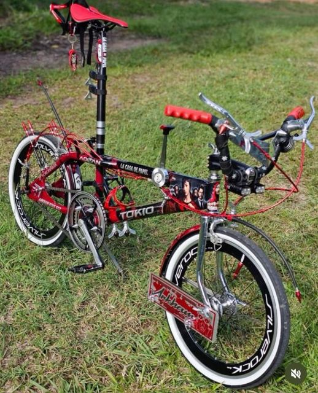

The vehicles that move El Salvador
From the pickup that climbs to the village to the morning minibus: which brands and models you see most on the street, and why.
Start with pickupsMost viewed models on the street
A sample of the ones that show up most often. Tap one to see its full category.
Explore by vehicle type
Each category has its own page.
Pickups
Work, field and cargo.
6 models
Sedans and compacts
City, family and daily work.
8 modelsSUV
Space and ground clearance.
5 models
Motorcycles
Daily transport and delivery.
7 modelsBuses and minibuses
Public transport.
4 models
Heavy transport
Dump trucks and trailers.
2 models
Bicycles
Simple, affordable transport.
1 modelThree brand groups dominate the street
Japanese brands lead, with Korean brands increasingly present and a wide supply of imported used cars.
Toyota
The most seen brand in the country: Hilux, Corolla, Yaris, RAV4, and the Hiace and Coaster minibuses. It keeps its resale value.
Pickups, sedans and transportHyundai and Kia
Accent, Tucson, Rio, Soul and Sportage. Very common in family cars and as a first car, for their price and equipment.
Sedans and SUVsNissan, Suzuki and Honda
Sentra, Frontier, Grand Vitara and CR-V. They have parts and workshops in almost every department.
Mixed useWhy these models repeat
It is no accident: there are practical reasons behind what circulates most.
Parts and workshops
If a part is available in any city and any mechanic knows the engine, the car stays cheap to keep running.
Varied streets and roads
Between metro-area traffic, dirt roads and rain, ground clearance and toughness matter most.
Used-car market
Much of the fleet arrives second-hand, mostly from the United States, which favors brands with good resale.